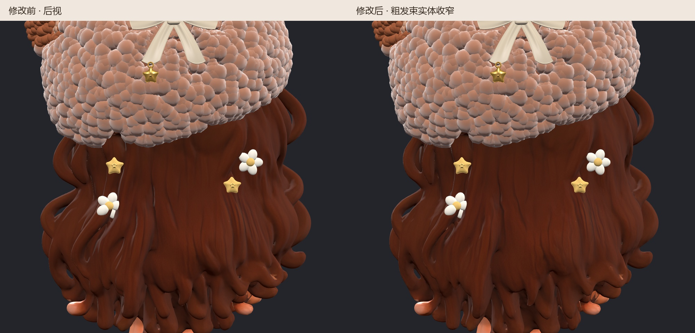
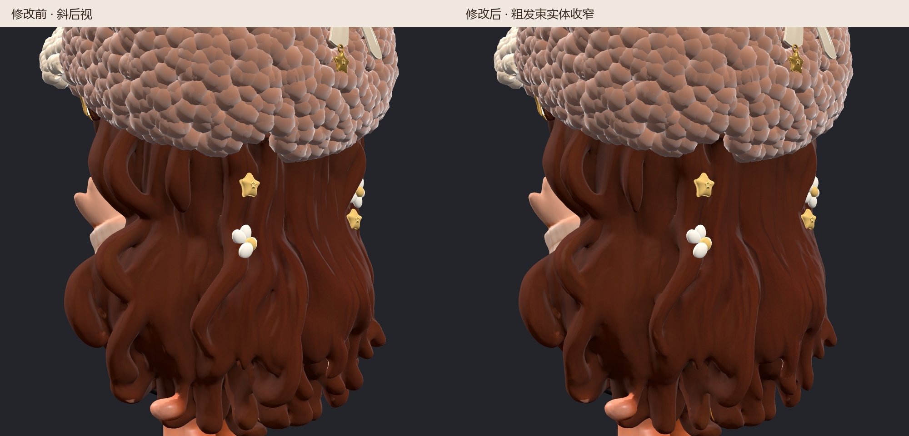
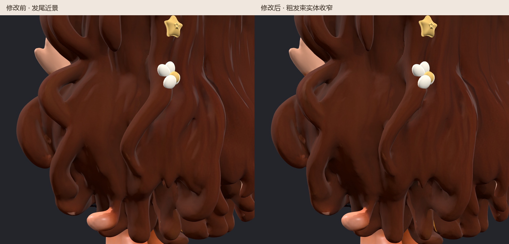

本次对原有大波浪发束做横截面渐进收缩，收窄发束宽度和厚度；保留纵向坐标、波浪走向、配色及星星小花的贴合区域。未使用上一版的细纹凹槽方案。
打开自动导入三维预览 · 几何与截面测量 · 浏览器与 SHA 校验
对现有发束的固定平面截面抽测如下。截面减少量随位置不同，并非所有发束均匀缩小同一比例；窄截面及装饰贴合处保留过渡。
| 截面 Y / Z（mm） | 原宽度 | 新宽度 | 减少 |
|---|---|---|---|
| 16 / 36 | 2.82 mm | 1.84 mm | 34.8% |
| 20 / 36 | 3.10 mm | 2.55 mm | 17.7% |
| 20 / 36 | 3.74 mm | 3.29 mm | 12.2% |
| 20 / 36 | 2.58 mm | 1.96 mm | 23.9% |
| 20 / 36 | 3.25 mm | 3.01 mm | 7.4% |
| 20 / 50 | 2.71 mm | 1.93 mm | 28.8% |
| 24 / 43 | 3.06 mm | 2.42 mm | 20.8% |
| 24 / 50 | 9.72 mm | 8.42 mm | 13.4% |
几何检查未新增边界边或非流形边；与基线相比较的面片翻向检查结果为 0。全新浏览器验证通过：自动导入、零文件选择框、零控制台错误、解压 SHA 与 GLB 一致。本次仅验收发束收细，沿用 v36 尚未完成的生产级壁厚验收状态。


